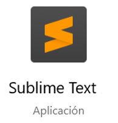

¿Qué editor para códigos HTML puedo utilizar?
El clásico Bloc de notas, que como sabemos viene instalado en Windows funciona correctamente con los códigos html, pero no contiene ayuda alguna para la edición del lenguaje o para la corrección de errores. Para utilizar este editor solo digitas el código html, guardas el archivo colocándole un nombre que termine con la extensión .html y seleccionas que el tipo de documento sea "Todos los archivos (*.*)". Finalmente al abrir el archivo se visualizará en un navegador Web.
Visual Studio Code es un editor de código ligero, potente y gratuito desarrollado por Microsoft para ser utilizado en diferentes sistemas operativos. Este reconoce muy bien los códigos de html 5, CSS y Javascript resaltando y autocompletando cada sentencia. Esta aplicación permite agregar extensiones para trabajar con C ++, C #, Java, Python, PHP y otros.
Para descargas se recomienda el sitio web oficial: https://code.visualstudio.com

Sublime Text te permite trabajar con HTML de manera eficaz, es un programa que hasta esta fecha no bloquea su uso, pero su sitio web oficial informa que para su uso continuado se debe comprar una licencia personal o de negocio. Para que este editor reconozca las sentencias y las autocomplete se deben buscar algunos paquetes de instalación en la opción de preferencias del programa e instalarlos, como son Auto Filename (para gestionar rutas de archivos), HTML (Para autocompletar la estructura básica de HTML 5), Emmet (Para agilizar autocompletando códigos repetidos), SublimeCodeIntel (Para autocompletar sentencias de códigos, variables y funciones que se están utilizando, ...), entre otros complementos que facilitan el desarrollo Web.
Para descargas se recomienda el sitio web oficial: https://www.sublimetext.com
Otros navegadores que vale la pena investigar son: notepad++, Brackets y Dreamweaver de Adobe, ...